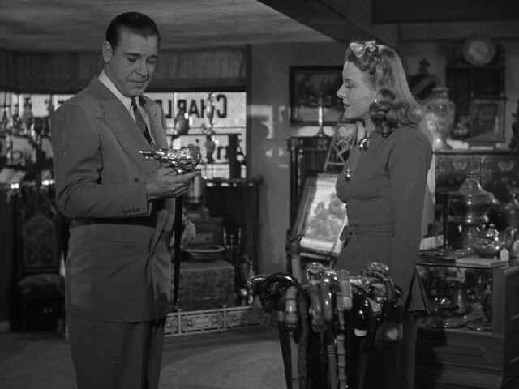

|
Wolf
Man, The(SE)/B+,B+ |
|
Universal/1941/70m/FS
1.33/BW |
“Whoever is bitten by a werewolf and lives becomes a
werewolf himself,” gypsy Maleva advises Larry Talbot. When
things get really tough the old gypsy lady is on hand with
comforting thoughts like ”The way you walked was thorny
through no fault of your own.” While Maria Ouspenskaya
delivers these lines with deadpan conviction, it’s easy to see
how The Wolf Man could have been a hoot. It’s not! The actors
take everything seriously enough to find the pathos in Larry
Talbot’s situation. No sooner does Talbot reunite with his
father after eighteen years abroad and fall head over heels for
a local girl than the moon begins illuminate his fate and he is
bitten by a werewolf. And now you know the quote.
 |
|
Yes, it's a wolf's
head, Larry ©Universal |
The script is pretty straightforward
with a little psychological hokum thrown in to beat around the
bushes. But beating the bushes and bringing out the werewolf is
what The Wolf Man is all about. He can’t resist the glow of
the moon and the lycanthropic call of evil nature. The Wolf Man
answers the primordial calls as his body transmogrifies into the
hairy visage of an upright wolf. In the night he seeks out his
prey and in the day he prays for his freedom from his horrible
fate.
The Wolf Man introduces its characters
with animal efficiency. Director George Waggner races through
the expository scenes to cut to the chase. Curt Siodmak’s
script relies heavily on European folklore, letting the
gypsy’s impart their wisdom in flowery language. The sets and
photography provide a solid platform for Larry Talbot’s
downfall.
Lon Chaney, Jr. is effective in his
most plaintiff moments as tortured Larry Talbot. The hulking
actor’s pain may be all too obvious, but there is something
about Chaney that makes you feel for him. Behind the chiseled
face is great pain. Classy Claude Rains seems about five
sizes too small to play Chaney’s father, but the actor is
commanding and Chaney plays deferential well. Of course, my
favorite actor in The Wolf Man has to be Maria Ouspenskaya. She
just has too much fun. She certainly gets the best lines and she
hovers over the most important scenes, popping out of the
shadows with fateful pronouncements. Solid Ralph Bellamy is
pretty much wasted in the role of the local constable.
The elements for this transfer of The
Wolf Man are quite wonderful. Except for a few scratches and
some negative dirt, this is a very clean print with wonderful
contrast and atmospheric lighting perfectly preserved. Blacks
are rich and clothing patterns detailed and stable. There is not
a abundance of film grain, quite typical on surviving films of
more than fifty years ago. The sound is breathtakingly clean.
The timber of Maria Ouspenskaya voice, rolling the lycanthropic
incantations over Lugosi and Chaney is infused with an eerie
beauty.
Film Historian Tom Weaver does a nice
job on the audio commentary providing lots of color on the
actors and production. Film historians cannot resist the chance
to talk about bit actors, but bear with Weaver. His delivery is
comfortable and much of what he has to say enhances the
experience of The Wolf Man. I did not find the special
documentary made for The Wolf Man had the same life as the
Frankenstein efforts. The productions are beginning to feel too
much alike, with commentators like special effects artist Rick
Baker making similar appearances on camera in each one, even
though Baker’s enthusiasm is welcome.
|
|